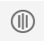

Use the Debug navigator to examine running threads and stack information, or to monitor debug gauges while your app is running in a debug session. The Debug navigator opens automatically when you pause the execution of your app or your app reaches a breakpoint in the code.
To open the Debug navigator yourself, click the Debug Navigator button ( ) in the navigator area of the main window.
) in the navigator area of the main window.
The standard display in the Debug navigator shows the debug gauges in the upper part and the process view in its lower part. Click the Hide/Show button () to manage the display of the debug gauges for when you need more room in the process view during a debugging session.
The process view selector menu () controls the display in the process view. Use it to choose between viewing by thread or by queue, or to enable other displays for view debugging and memory debugging.